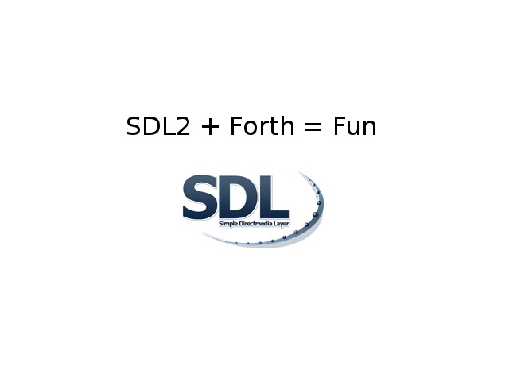

DAVE'S LIFE ON HOLD
SDL2 Forth
On this leap day, I would like to announce something that I've been working on for about a week now:
I have been doing more and more programming in SwiftForth and found it necessary to start producing some more graphical applications. Having had some experience binding SDL to various other languages over the past 2 decades, it gave me an excuse to dig into SwiftForth's library binding routines. It also gave me a chance to evaluate Forth as a cross platform development language for real applications.
To get a workable set of SDL2 bindings took about 2 days. This means video, audio, events, controllers, keyboards, mice, joysticks, and delays are all working. Some of the more esoteric things like cpu info, files, clipboards, power management are also working, but far less central to making a typical applications.
The past day, I've largely spent adapting various tutorials and writing utility code to cut down on the amount of typing I've been doing. These are about to the level of the initial tutorials I did for SDLperl all those years ago.
The code for the most part just worked on Windows, and on Linux I ran into some issues with the 32bit library. Some of the SSE instruction based functions were segfaulting horribly due to what I presume are alignment issues. Overall however, it has worked pretty much right out of the box.
I will continue to work on these bindings as I'm planning on using them to write some supporting application code for a couple projects I'm working on. The ability to easily integrate inline assembler into the project has made working with SwiftForth and SDL2 a dream. Forth lets me approach the problem of incremental optimization at the lowest levels, but avoid having to rewrite all my boilerplate. It is almost like having the cake you just ate, and getting to eat it all over again.
